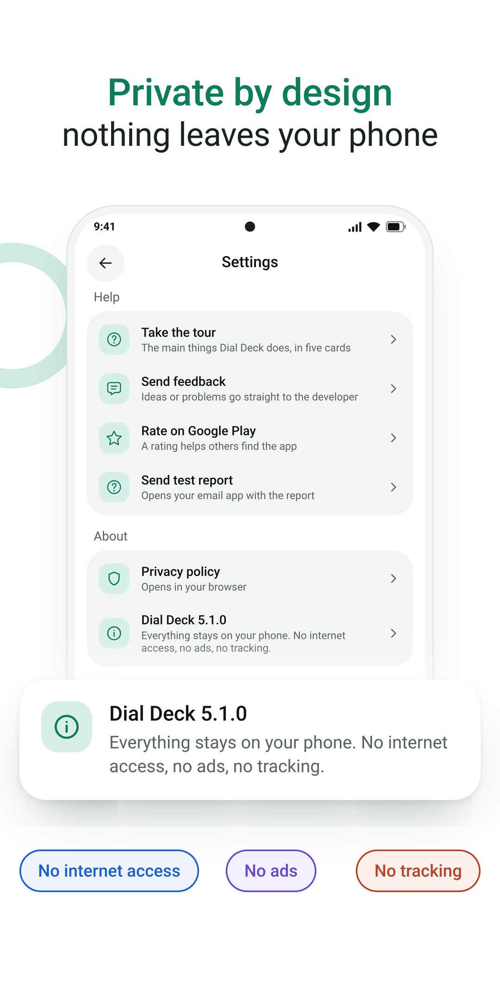
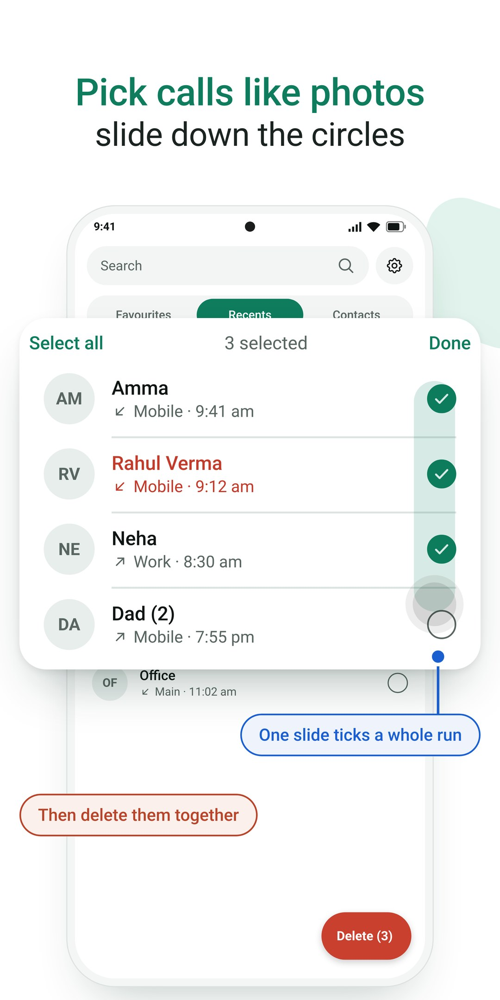
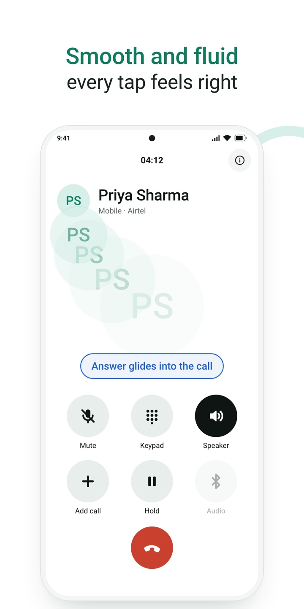
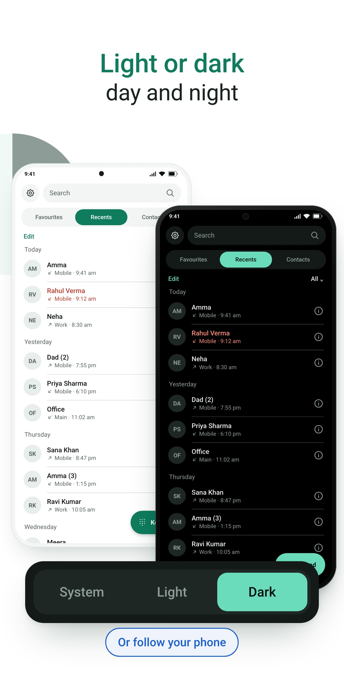

A simple Phone app
Your favourites, recent calls and contacts in one simple place, with big clear buttons, a call screen that's easy to use, and a home-screen widget for the people you call most.
Get it on Google PlayFree · No ads · Android 12 and newer
Get started
Make it your Phone app
Open Dial Deck and tap "Make it my phone app". Android asks which Phone app to use; pick Dial Deck. You can switch back any time.
Add the widget (optional)
Long-press your home screen, tap Widgets and add Dial Deck: your favourites and recent calls, one tap away.
Why people like it
Home screen
Your people, one tap away
The Dial Deck widget puts your favourites and recent calls right on your home screen.
- Choose Call, WhatsApp or Message on its side bar, then tap a name
- Switch between Recents and Favourites with one tap
- Seven widget themes, from Glass to see-through Clear
Easy to use
Calm and easy to read
Big, clear buttons right under your thumb, and text that stays readable.
- Works with large text and bold text
- Big touch targets everywhere
- Screen readers like TalkBack are supported
Your colour
Your colour, everywhere
Pick Green, Blue, Violet, Coral, Pink or Gold.
- The app, the widget and the home-screen icon follow your choice
- Every colour works in light and dark

Privacy
Private by design
Dial Deck has no internet access at all. Your calls and contacts never leave your phone.
- No ads and no tracking
- No account to make
- Nothing is sent anywhere

Tidy up
Pick calls like photos
Tap Edit and slide down the circles to tick a whole run of calls, then delete them together.
- Put favourites in your own order: tap Edit, then drag
- Press and hold any name for more options

Calls
Smooth and fluid
When you answer, the caller's photo glides into place. Every button is big, round and where you expect it.
- Mute, Keypad, Speaker, Add call and Hold
- Call waiting, and quick replies when you can't talk

Day and night
Light or dark
Choose light, dark, or follow your phone.
- Easy on your eyes at night
- Your colour carries over to both
And more
Questions
Can I go back to my old Phone app?
Yes, any time: Android Settings › Apps › Default apps › Phone app, and pick the one you had. Dial Deck then stops reading your call history and works as a widget only.
Why does it ask for these permissions?
As your Phone app it needs your call history (for Recents and missed calls), contacts (names, photos and favourites) and phone (to make and receive calls). Everything stays on your phone and is never sent anywhere; the app can't even connect to the internet.
Is it really free?
Yes. No ads, no in-app purchases, no subscription.
Which phones does it work on?
Android 12 or newer: Pixel, Samsung, OnePlus, Vivo, Xiaomi and more, including tablets and foldables.
How do I send feedback?
Open Dial Deck › Settings › Help › Send feedback. It opens your email app with the details filled in.